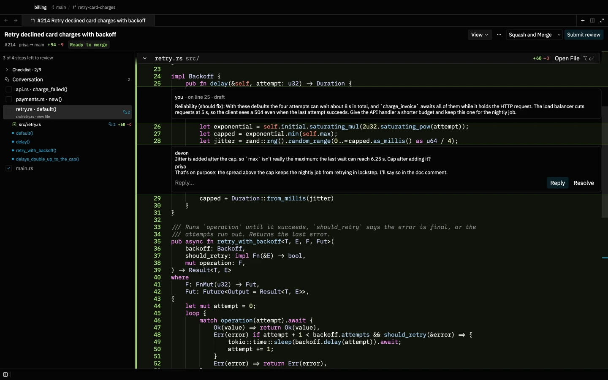
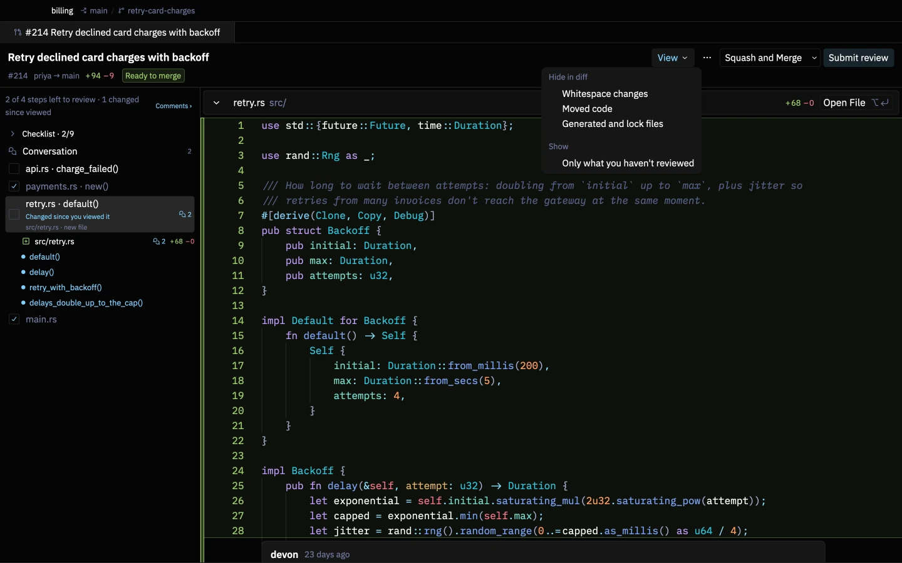
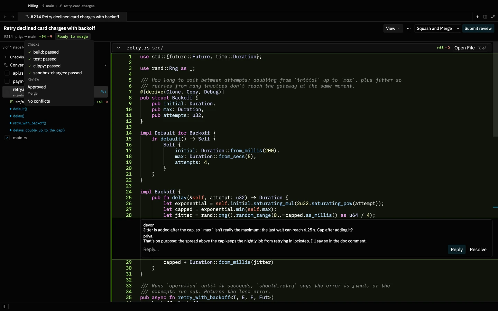
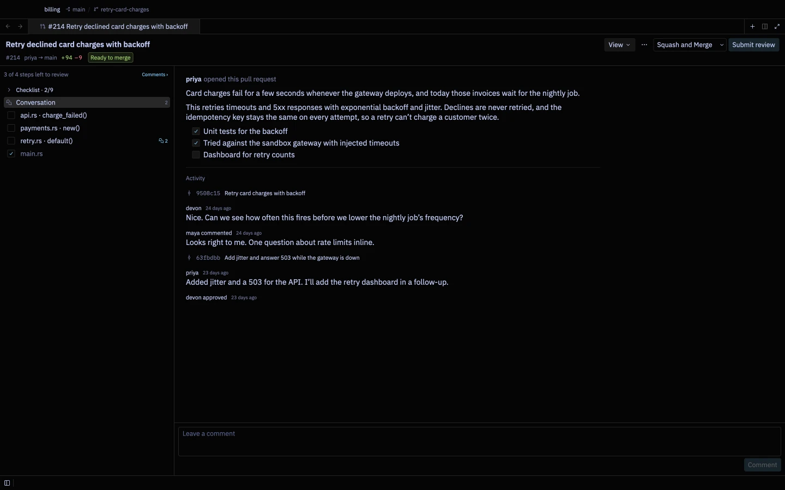
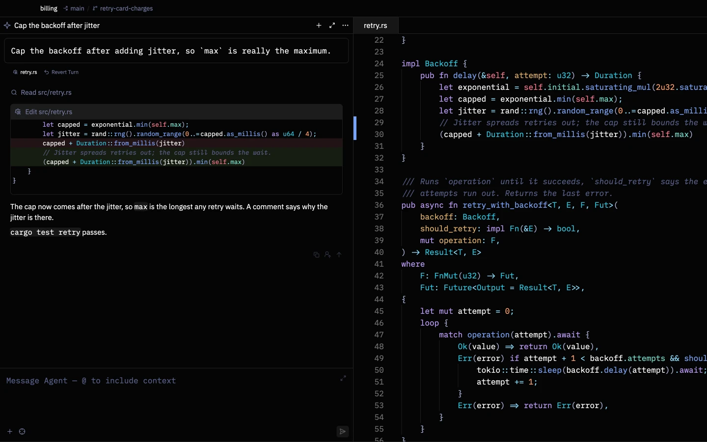
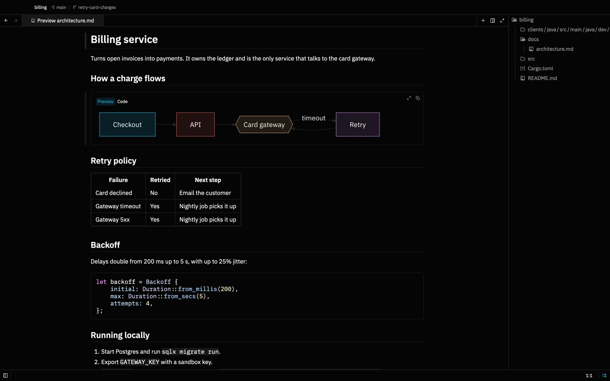
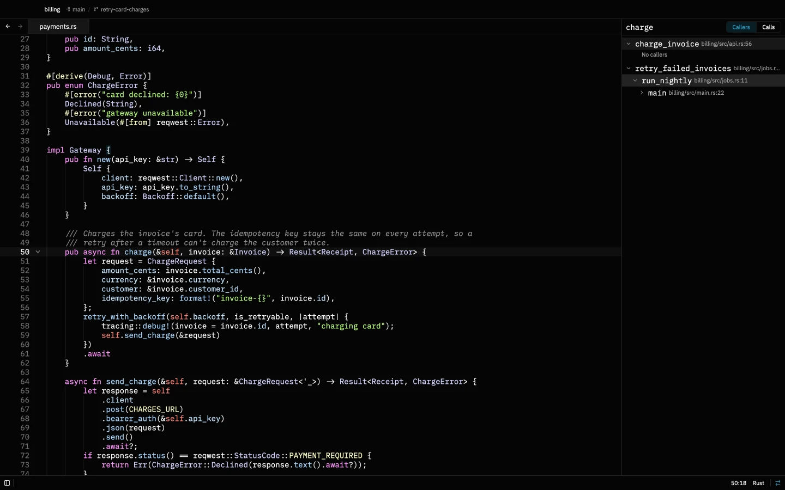
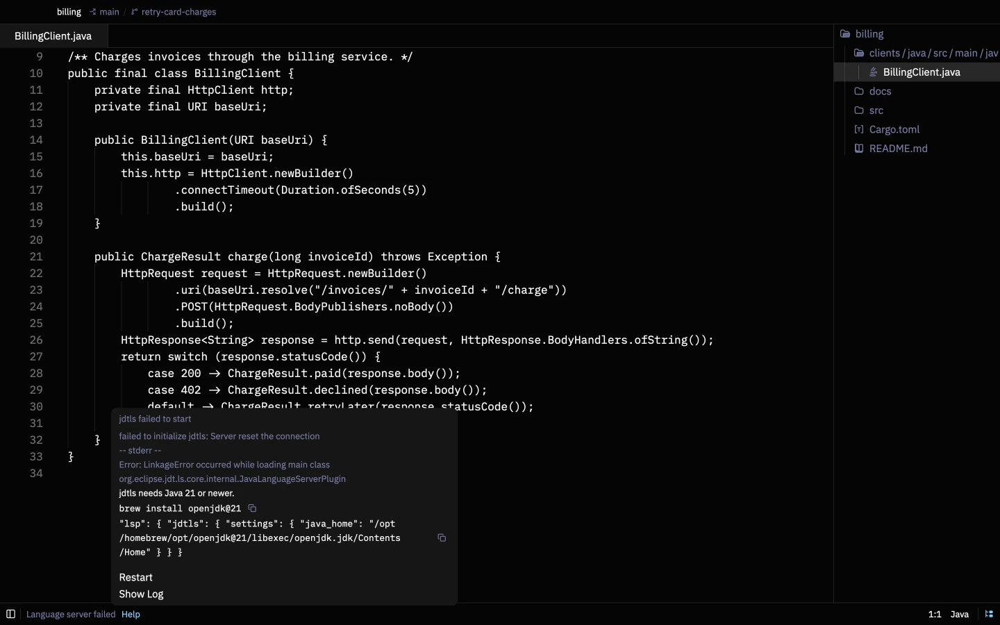
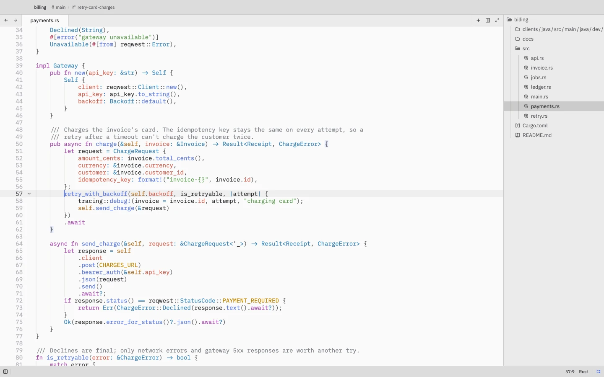

A review map in reading order
Steps follow the call graph: helpers first, then their callers, tests last. Each step shows its files, what changed and how many open comments it has.
More code is written by agents than ever, so more of your day is reviewing it. Photon is a lean code editor built around that: pull requests in reading order, AI review that checks its own findings, your coding agents, and docs with live diagrams.
$ brew tap heapworks-in/photon && brew install photon

Pull requests in reading order, with context, AI review and merge.
Claude Code and Codex on your own plans, reviewed turn by turn.
Markdown that opens for reading, with Mermaid and Excalidraw.
Call trees, navigation without a server, and help when one breaks.
Every command a block you can copy, rerun and act on.
Quick to start, quiet on the network, no account.
Code review
Photon splits a change into steps, puts the code that gets called before the code that calls it, and shows what each change touches. When you're done, you merge from the same tab.
Steps follow the call graph: helpers first, then their callers, tests last. Each step shows its files, what changed and how many open comments it has.
The functions a change calls and the code that calls it appear beside the diff, so you don't hunt for context.
Viewed marks belong to the push you reviewed. After the author pushes again, changed steps are flagged and one click shows just the new diff.

Run your own agent over the pull request. It reviews like the developer who gets paged when the change breaks, confirms each finding against the code, and drops what it can't prove. Findings arrive as drafts marked must fix, should fix or nice to have.
Comment on any line, not only the diff. Drafts save as you type. Outdated comments are listed, not lost, and suggestions commit in one click.
Checklists in settings apply by path, so database, CI and dependency changes each get the questions that matter for them.


The header says whether the pull request can merge and why not. Merge asks first, warns about unsent comments, and refuses if the author pushed after you loaded the review.
The Pull requests panel lists what's waiting on you, with checks, unresolved threads and new commits. Each list is a GitHub search you can change in settings.
A pull request opens in its own copy of the repository, never runs git hooks, and stays restricted until you trust it. Your GitHub login stays with gh.
Agents
Photon doesn't sell an AI subscription. It runs the coding agents you already use and makes every turn easy to check and undo.

Agents run as you, on your own accounts. There's no server in between.
Photon snapshots your files before each turn. Open a turn's diff from its file chips, or put everything back with Revert Turn.
Select code and press ⌥ T to start a thread about exactly those lines.
Press ⌥ E on a selection to note a change. Apply All sends every note to your agent in one go.
Docs and diagrams
Markdown opens for reading, diagrams render in place, and editing is a double-click away.

Markdown files open in the preview. ⌘ ⇧ V flips the same tab to the source, and a double-click edits the spot you're reading.
Diagrams render in place, follow your theme and open full size in one click. So do images.
Open a .excalidraw file and draw, with the hand-drawn fonts and popular libraries included and no network calls. Save as .excalidraw.svg to show the diagram in your docs and keep it editable.
Understand code
Follow calls through a tree, jump to definitions without a language server, and get a plain answer when one won't start.


Keep the call hierarchy open as a panel, switch between callers and calls, and expand any level.
⌘-click still finds the definition when no language server runs, by searching the project for it.
When a server can't start, the status bar says why, with the command that fixes it, Restart and Show Log.
Terminal
Every command and its output become one block, so you never scroll through noise to find what you need.
Where it ran, on which branch, how long it took and whether it worked. Copy the command or the output, or run it again.
Select with the mouse, undo, write over several lines, and search history across projects with ctrl R.
cargo test, pytest and jest are summarised as passed and failed. Rerun only the failures.
JSON, kubectl get and docker ps output open as a table or copy as CSV.
Stage, diff or discard each file right where git status listed it.
When a long build finishes in the background, a notification brings you back to its block.
⌘-click src/main.rs:42 in any output to open that line beside the terminal.
Every project and review opens as a tab in one window, and comes back in order after a restart.
Lean and yours
Photon is native, drawn on the GPU, and does nothing when you aren't using it.

Switch themes with ⌘ K ⌘ T. Font styles change the editor, menus and terminal together.
Everything is configured in settings.json, with the defaults documented beside each option.
brew upgrade photon picks up each release.
$ brew tap heapworks-in/photon && brew install photon